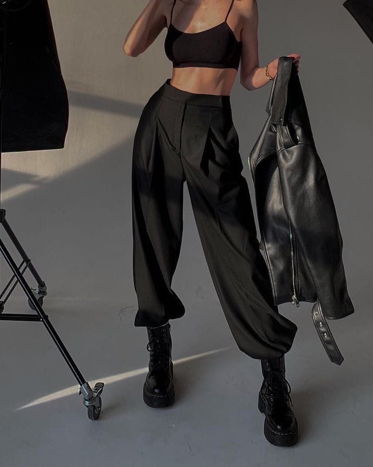

Как образовалась идея для создания сайта и почему так важно разбираться в моде?
немного фактов о создании сайта
Большая часть моих друзей и знакомых не заморачивается по поводу внешнего вида. Как говорится: "По одёжке встречают, по уму провожают" именно из-за этого иногда вначале знакомства о них складывается не самое положительное мнение, конечно же им бы хотелось производить отличное впечатление на людей, но они не знают, где найти информацию о том, как начатьь разбираться в одежде и следить за трендами, поэтому команда FOREN решила самостоятельно заняться этим вопросм и улучшить жизнь миллионов людей.
Почему же важно разбираться в моде?
Во-первых, вы развиваете свой вкус. А иметь хороший вкус означает выбирать лучшее из множества предложенного, и касается это не только гардероба.
Во-вторых, у вас формируется индивидуальный стиль. Базовые знания о моде определяют фэшн-каноны, а мониторинг трендовых новостей вдохновляет на эксперименты. Вы учитесь визуальному самовыражению и получаете социальный бонус в виде положительной оценки со стороны окружающих.
В-третьих, расширяется кругозор. Мода — это не просто сочетания одежды, обуви и аксессуаров. Это и история, и культура, и, конечно, искусство. Изучая моду, вы открываете для себя двери и в другие сферы жизни, становясь человеком более эрудированным и образованным
Почему же важно разбираться в моде?
Во-первых, вы развиваете свой вкус. А иметь хороший вкус означает выбирать лучшее из множества предложенного, и касается это не только гардероба.
Во-вторых, у вас формируется индивидуальный стиль. Базовые знания о моде определяют фэшн-каноны, а мониторинг трендовых новостей вдохновляет на эксперименты. Вы учитесь визуальному самовыражению и получаете социальный бонус в виде положительной оценки со стороны окружающих.
В-третьих, расширяется кругозор. Мода — это не просто сочетания одежды, обуви и аксессуаров. Это и история, и культура, и, конечно, искусство. Изучая моду, вы открываете для себя двери и в другие сферы жизни, становясь человеком более эрудированным и образованным